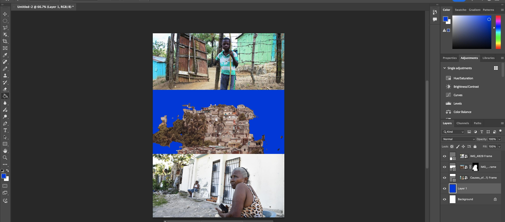

Screenshot:


Screenshot:
For this project I used Photoshop to create two photomontages that mix different images to express a message. I practiced using layer masks to cut out parts of the photos cleanly and blend them into new backgrounds. The biggest skill I learned was making precise selections so the subjects looked like they belonged inside the new scenes. I also used blending modes to adjust the lighting and colors so nothing felt out of place. Working with the layers panel helped me stay organized while building each idea step by step. My first piece focused on community and living conditions. I combined images of buildings, streets, and people to show a layered view of daily life. My second piece used social and political imagery, including the border wall and the idea of separation and family. I used masking to place the figures into the scene and adjusted the sky to match the tone. Overall this project taught me how photomontage can tell a story through contrast and placement. Photoshop let me mix real moments into something new that carries a stronger message.